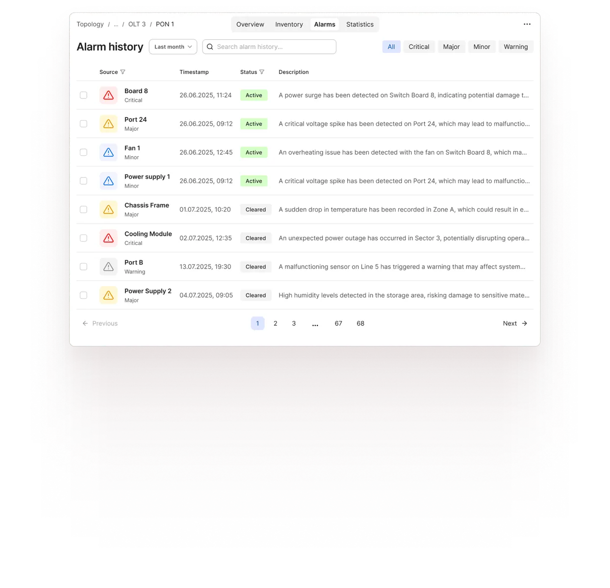

Node Management UI
A node management system is the software layer that lets someone see and control every device on a network — routers, modems, gateways — from one dashboard.
I redesigned Kontron’s product Lumia for the first time in 15+ years, focusing on turning a complex interface into a faster, more intuitive workflow.